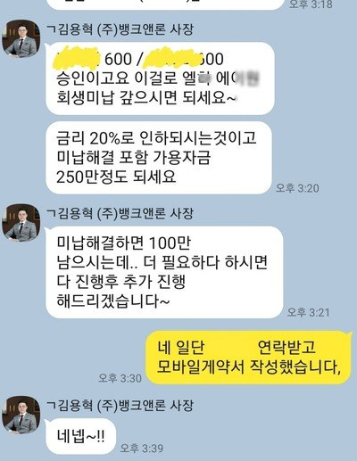

[개인회생자대출] 김용혁 이사님 통해 대출 성공했어여!
안녕하세여.
매번 뱅크앤론 을 통해 도움을 받고있어 항상 감사합니다,
개인회생이후 대출은 피했어야 하나 부득이 사정이 생겨 다시 진행을 하여
연 24프로의 대출건이 있었습니다,
이번에 금리가 20프로로 내려갔다는 공지를 보고 대환을 하고자 신청을 했습니다,
기존 회생 미납도 2.9 있어 도움을 받고자 연락들 드렸습니다
기존 대출이 엘* 396만원 / 로* 559만원 / 옐* 838만원 과 미납 143만원 가량이있는 상황이였고
연24프로 였습니다.
3개월 급여가 좀 적어 불안헀는대 연계사 통해 1200만원의 20프로대로 대환이 가능했습니다'
다행이 두군대 24프로 상품을 완납하고 미납까지 해결되어 조금이나마 숨을 쉴수 있게 되었습니다
항상 진행을 도와주셔서 감사합니다.
